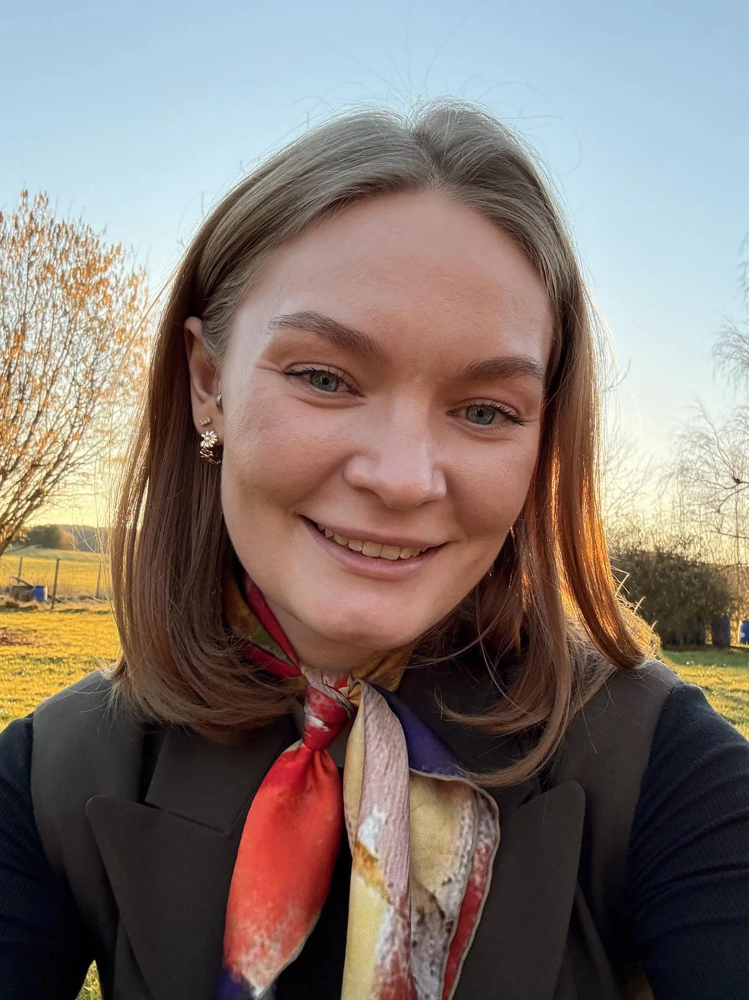

Om mig
Emma Øhlers Frederiksen

Mit navn er Emma, og jeg studerer webudvikling på 6. semester på Zealand – Sjællands Erhvervsakademi.
Jeg motiveres af at skabe digitale løsninger, der både er strukturerede, gennemtænkte og brugervenlige.
For mig handler udvikling ikke kun om at få noget til at fungere, men om at forstå, hvordan og hvorfor det fungerer.
Jeg er nysgerrig, analytisk og arbejder målrettet med mine projekter. Jeg trives i processen med at optimere, strukturere
og forfine detaljer, indtil helheden giver mening. Uden for studiet finder jeg ro og fokus i træning og løb – noget der
også afspejler min tilgang til udvikling: kontinuitet, disciplin og ønsket om hele tiden at blive bedre.
Jeg arbejder med moderne frontend-teknologier som Vue og React, hvor jeg har fokus på komponentbaseret opbygning, state management og brugeroplevelse.
På backend-siden arbejder jeg med Node.js og Express samt PHP, hvor jeg udvikler strukturerede og skalerbare løsninger.
Derudover har jeg en stærk interesse for databasedesign og arbejder med relationelle databaser i MySQL. Jeg lægger vægt på
korrekt struktur, normalisering og dataintegritet for at sikre stabile og gennemtænkte systemer.
Når jeg arbejder med et projekt, har jeg fokus på overblik, kvalitet og en tydelig retning i processen.
For mig starter et godt projekt med en gennemtænkt arkitektur og en klar forståelse af problemstillingen.
Jeg lægger vægt på, at både kode og database hænger logisk sammen, så løsningen bliver stabil og nem at videreudvikle.
Jeg arbejder analytisk og reflekterende og ser optimering som en naturlig del af processen – både teknisk og med brugeren for øje.
Brugeren er altid en vigtig del af mine overvejelser, når jeg udvikler noget. Jeg trives både i teams, hvor sparring og fælles refleksion
styrker resultatet, og i selvstændigt arbejde, hvor jeg tager ansvar for fremdrift og kvalitet. For mig handler udvikling ikke kun om at
få noget til at virke, men om at skabe sammenhæng mellem funktionalitet, teknologi og brugerens behov – og om at forstå helheden fra idé til færdig løsning.
Jeg motiveres af at se, hvordan et projekt udvikler sig gennem iteration og refleksion, og hvordan små forbedringer undervejs styrker den samlede løsning.
Jeg har en særlig interesse for databasedesign og systemarkitektur og fordyber mig gerne i, hvordan data struktureres og anvendes på en meningsfuld måde.
Jeg finder det spændende at arbejde i mellem frontend, backend og database, hvor helheden i systemet bliver tydelig.
Fremadrettet ønsker jeg at udvikle mine kompetencer inden for datadrevne løsninger og optimering, hvor analyse og struktur spiller en vigtig rolle.